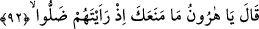
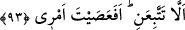

nûru ile daha önce işitip görmediği sırları ve mânâları işitir ve görür. Sonra vaktinden
önce şeyhin sohbetinden mahrum kalmakla mübtelâ olursa velâyet nûru ondan zâil olur,
bir tür hicâb ile perdelenir, şeyhin sohbetine dönene ve velâyetinin nûru ile nurlanana
kadar daha önce olduğu gibi sağır ve kör kalır.”
92. (Mûsâ, döndüğünde) Dedi ki: “Ey Hârun, bunların dalâlete düştüklerini
gördüğün vakit seni engelleyen ne oldu.
Bu cümle açıklama için getirilmiş bir başlangıç cümlesidir (isti’nâf-ı beyânî). Sanki
“O yoldan çıkanların cevabını işittiği vakit Mûsâ (a.s.) Hârun (a.s.)’a ne dedi? Onların
durumunu gördükten sonra Hârun’un sükûtuna rızâ gösterdi mi?” diye sorulmuş ve
cevap olarak şöyle denilmiştir: Hz. Mûsâ, Hârun (a.s.)’a söylediklerini gayet öfkeli
iken söyledi. Hattâ saçından ve başından tutup çekti. Hârun (a.s.) uzun saçlı idi.
Mûsâ (a.s.), döndüğünde “Dedi ki: “Ey Hârun, bunların dalâlete düştüklerini”
buzağıya taparak Allâh’a kulluk yolundan çıktıklarını ve sana çirkin sözler söyleyecek
kadar kendilerini büyük görecek duruma geldiklerini “gördüğün vakit seni engelleyen
ne oldu.”
93. (Neden) benim yolumu takip etmedin? Emrime âsi mi oldun?”
“(Neden) benim yolumu takip etmedin?” Onların doğru yoldan saptıklarını gördüğün
vakit, Allah için kızma kâfirlerle savaşma, beni takip edip onların yaptıklarını bana
haber verme husûsunda bana tâbî olmaktan, seni ne alıkoydu? Böylece ben de derhal
onların yanına dönerdim. Bu helâk edici fitneyi ortaya koymalarına mâni olurdum. Ya da
seni bana uymamaya, Allah ve onun dîni için şiddetli gadab göstermemeye çağıran
nedir?”
et-Te’vîlâtü’n-Necmiyye’de şöyle der: “Burada işâret vardır ki Mûsâ (a.s.) mîkatta
iken Hakk’ın şâhidleri denizinde gark olmuştu, istiğrak halindeydi. Hak’tan gayrı hiçbir
şeyi görmüyordu. Vâsıta perdeleri ile de perdelenmiş değildi. Nihayet Allah “Senden
sonra biz, kavmini imtihan ettik ve Sâmirî onları yoldan çıkardı.” (Tâhâ, 20/85)
buyurarak onu vâsıtalara mübtelâ kıldı. Burada Allah, hayır ve şer bütün fiillerinde
Allah ile birlikte başkasını görüyor mu diye Hz. Mûsâ’yı denemek için imtihan etmeyi
kendisine, yoldan çıkarmayı Sâmirî’ye izâfe etti. Hz. Mûsâ da vâsıtalara iltifat etmedi.
Allâh’a yakınlık yaygısının üzerinde hakikat makamında fiili sadece Allah’tan bildi.